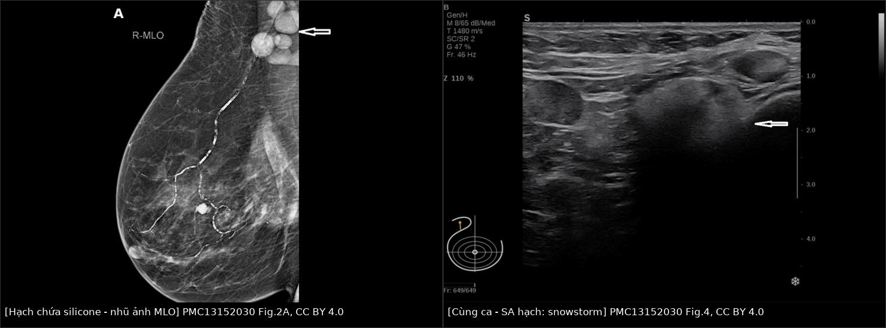
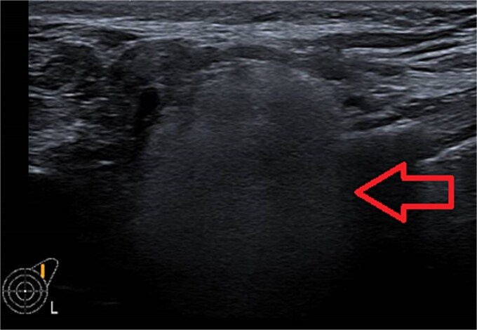
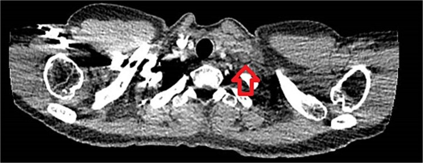
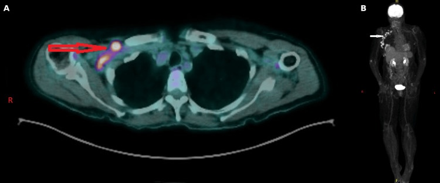
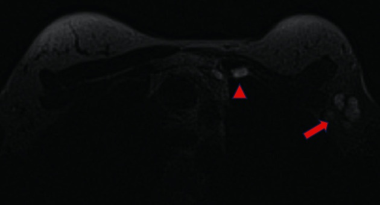
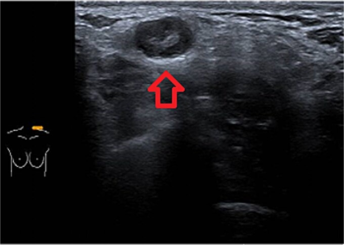

1686 — Hạch nách chứa silicone & siliconoma / Silicone lymphadenopathy and siliconoma
Tags: pattern:snowstorm pattern:hach-tang-hoi-am vung:vu vung:hach-nach protocol:sieu-am-vu protocol:MRI-vu incidentaloma:hach-nach score:BI-RADS
Mức chắc chắn (certainty): tổng hợp y văn (literature synthesis) — ghép 1 đoàn hệ 10 năm về tỉ lệ lưu hành (Berben JA và cs, JPRAS Open 2025, PMC11894321, CC BY 4.0), 1 ca nguyên văn hạch thượng đòn (Elayyan R và cs, J Surg Case Rep 2025, PMC12069027, CC BY 4.0), 1 ca nguyên văn tăng canxi do u hạt silicone (Alfaour A và cs, Cureus 2026, PMC13152030, CC BY 4.0), 1 tổng quan cơ chế – chuỗi xung (de Faria Castro Fleury E và cs, Int J Inflam 2022, PMC9392643, CC BY 4.0) và 1 pictorial review về khối tăng hồi âm của vú (Journo G và cs, Insights Imaging 2018, PMC5893486, CC BY 4.0). Bài 1656 đã phủ vỏ gãy/gel bleed; bài này chỉ đi sâu silicone đã ra khỏi vỏ và tới hạch.
1. Tổng quan — silicone đi tới hạch bằng đường nào và vì sao nó "sáng" trên siêu âm
- Cơ chế: gel silicone thoát qua vỏ (rách vỏ hoặc gel bleed – thấm vi thể qua vỏ còn nguyên) bị đại thực bào bắt và mang theo dòng bạch huyết tới hạch vùng; tại đó hình thành u hạt phản ứng dị vật (foreign-body granuloma) với tế bào khổng lồ đa nhân, đại thực bào chứa giọt silicone, lympho và xơ hóa. Khối u hạt trong nhu mô vú gọi là siliconoma, trong hạch gọi là hạch chứa silicone / silicone lymphadenopathy (SLA).
- TẠI SAO siêu âm thấy "bão tuyết" (snowstorm): tốc độ âm trong silicone ≈ 1.000–1.100 m/s, thấp hơn mô mềm (≈ 1.540 m/s). Chênh trở kháng âm rất lớn ở mặt phân cách silicone–mô → hồi âm mạnh (tăng hồi âm) + suy giảm chùm tia phía sau rất mạnh ("bóng lưng bẩn"), và các giọt gel nhỏ phản xạ lặp lại tạo hình ảnh lấp lánh. Hệ quả thực hành: vùng sau "bão tuyết" bị che mờ, nên dễ bỏ sót hạch thứ hai hoặc tổn thương nằm sâu hơn.
- TẠI SAO nhũ ảnh thấy hạch "đặc, mất rốn mỡ": silicone đồng đậm với vỏ implant và đậm hơn mỡ; hạch mất phần rốn mỡ sáng → trông như hạch di căn đặc. Giá trị chốt nằm ở so sánh với phim cũ: hạch đậm, không đổi qua nhiều năm là dấu hiệu lành tính mạnh.
- TẠI SAO MRI là "chuẩn vàng" cho vỏ nhưng KHÔNG phải cho hạch: chuỗi chỉ hiện silicone (silicone-only / silicone-sensitive) tách tần số silicone khỏi mỡ–nước → silicone sáng rực, tổ chức xơ quanh tối; nhưng hạch nhỏ nằm sát implant/mô xơ dễ bị che, nên MRI kém nhạy hơn siêu âm với SLA, trong khi nhạy hơn hẳn với rách vỏ (PMC11894321).
- TẠI SAO PET dương giả: đại thực bào và tế bào khổng lồ trong u hạt tăng chuyển hóa glucose, nên hạch chứa silicone bắt FDG — không có ngưỡng SUV nào tách được với di căn (chưa có trong y văn đã đọc); ca 77 tuổi dưới đây có hạch nách phải bắt FDG mạnh trên PET/CT.
- Số liệu nằm lòng:
- Tỉ lệ lưu hành SLA 5,83% (71/1.217 nữ có implant silicone, 10 năm, một trung tâm): 3,86% (47) có implant còn nguyên, 1,97% (24) kèm rách vỏ (PMC11894321).
- Trong nhóm đã rách vỏ, 15,0% (24/160) có SLA; trong nhóm implant còn nguyên, 4,4% — tức gel bleed một mình cũng đủ gây SLA (PMC11894321). Y văn trước đó có báo tỉ lệ 13,6%.
- Phân bố vùng hạch (tổng quan 190 vùng hạch đã báo cáo): nách 72% (136), trung thất trong 21% (40), cổ/thượng đòn 19% (36), trung thất 13% (24), nhiều vùng cùng lúc 23% (43) — nách là nơi hay gặp nhưng không được bỏ qua chuỗi trung thất trong và thượng đòn (PMC12069027).
- 55% trong 279 ca y văn không đau hoặc không triệu chứng; 10% có triệu chứng toàn thân (PMC11894321).
- Siêu âm (dấu snowstorm): độ nhạy 87,5%, độ đặc hiệu 100% (PMC12069027). MRI phát hiện rách vỏ: Se 91,7%/Sp 66,7% so với siêu âm Se 76,2%/Sp 53,8% (PMC11894321).
- Bối cảnh: rách vỏ tới 55% với tuổi rách trung vị 10,8 năm, 22% có silicone lan ngoài bao, sống implant 10 năm 83–85%; implant PIP có tỉ lệ rách cao tới 30 lần (PMC11894321, PMC12069027).
- Ca thượng đòn (39 tuổi, implant 16 năm, PIP): khối 2 × 3 cm không đau, CT 25 × 9 mm, chọc hút 180 mL dịch — tế bào học chỉ có tế bào mỡ lành, lympho, mảnh vụn, không ác tính; theo dõi vì không triệu chứng (PMC12069027).
- Ca tăng canxi (77 tuổi, implant đã tháo): canxi hiệu chỉnh 3,32 mmol/L, PTH 0,6 pmol/L (bị ức chế), 1,25-(OH)₂ vitamin D 86 pmol/L ("bình thường không hợp lý"), ACE 100 IU/L; core biopsy hạch nách → phản ứng dị vật silicone + hoại tử mỡ, không ác tính (PMC13152030).
2. Mẫu hình + chẩn đoán phân biệt theo vị trí (Gamut)
- Mẫu hình cốt lõi (nhớ "SNOW"):
- Snowstorm — hạch tăng hồi âm, có bóng lưng mạnh che mờ phía sau.
- Nodes đúng chuỗi dẫn lưu — nách → thượng đòn → trung thất trong/trung thất, có thể đối bên sau tái tạo vú (dẫn lưu bị đổi hướng).
- Old & stable — không đổi hình dạng/kích thước trên phim cũ nhiều năm.
- Without malignant feature — giữ hình bầu dục, bờ nhẵn, không xâm lấn mô mỡ xung quanh.
- Gamut theo vị trí:
- Nách: SLA (hay gặp nhất), di căn ung thư vú/tái phát, lymphoma, hạch phản ứng sau tiêm vaccine/viêm, lao, sarcoid, hạch lành có rốn mỡ.
- Thượng đòn/cổ: SLA (bắt chước di căn hạch cổ — ca nguyên văn), di căn ung thư vú/đầu cổ/phổi, lymphoma, lao hạch, sarcoid, tuyến giáp lạc chỗ.
- Trung thất trong (internal mammary): SLA, di căn chuỗi trung thất trong (ung thư vú), hạch phản ứng sau xạ, u trung thất.
- Nhu mô vú/thành ngực: siliconoma (u hạt trong mô mỡ, có thể xơ cứng như ung thư), rách vỏ ngoài bao, tái phát tại vị trí mổ, hoại tử mỡ (bài 1687).
- Ngoài vùng vú: cánh tay, bụng, chi dưới (báo cáo ca) — nhớ hỏi tiền sử implant hoặc tiêm silicone tự do.
3. Bảng so sánh phân biệt (ma trận đối chiếu)
| Thực thể (entity) | Hình ảnh điển hình (US/CT/MRI) | Chốt vào (rule-in) | Chốt loại (rule-out) | Gợi ý xác nhận |
|---|---|---|---|---|
| Hạch chứa silicone (SLA) | US: hạch bầu dục, tăng hồi âm trong lòng + bóng lưng "bão tuyết"; nhũ ảnh: hạch đặc, mất rốn mỡ, không đổi nhiều năm; MRI silicone-only: hạch sáng | Tiền sử implant + snowstorm + hạch ổn định trên phim cũ | Không có snowstorm, hạch to nhanh, bờ xâm lấn, xuất hiện mới sau ung thư → không loại trừ di căn | US là first-line; so phim cũ; core biopsy nếu còn nghi |
| Di căn hạch (tái phát ung thư vú) | US: vỏ dày > 3 mm hoặc mất rốn mỡ, bờ không đều, có thể dính; MRI: hạch bắt thuốc, DWI hạn chế | Hạch mới/to lên, vỏ dày lệch, bờ thùy múi, tiền sử ung thư đang theo dõi | Snowstorm điển hình + ổn định nhiều năm + implant rách cùng bên → ít khả năng | Core biopsy có IHC; PET/CT chỉ để tìm ổ khác |
| Lymphoma | Hạch rất lớn, nhiều hạch, đồng nhất, giảm hồi âm, có thể đẩy mạch; PET dương mạnh | Nhiều hạch to, không đau, LDH tăng, B symptoms | Hạch nhỏ, tăng hồi âm, có bóng lưng → không điển hình lymphoma | Sinh thiết hạch (không FNA đơn thuần) |
| Lao/sarcoid hạch | Hạch giảm hồi âm, hoại tử trung tâm, có thể vôi hóa; sarcoid: nhiều hạch hai bên + tổn thương phổi | Bối cảnh dịch tễ/lao phổi, hoại tử trung tâm, ACE tăng (sarcoid) | Tăng hồi âm + bóng lưng mạnh → nghiêng silicone | AFB/PCR, nội soi phế quản, sinh thiết |
| Hạch phản ứng (sau tiêm/viêm) | Hạch bầu dục, giữ rốn mỡ, vỏ mỏng đều, giảm dần theo thời gian | Mới tiêm vaccine/viêm cùng bên, hạch < 1–2 cm, tự nhỏ lại | Không nhỏ sau 4–6 tuần, mất rốn mỡ | Theo dõi 4–6 tuần; siêu âm lại |
| Siliconoma trong nhu mô vú | US: khối tăng hồi âm + suy giảm chùm tia; nhũ ảnh: khối đồng đậm với silicone, không có vôi hóa; MRI: sáng trên chuỗi silicone | Vị trí quanh implant/đường di chuyển, tăng hồi âm, tiền sử rách vỏ | Bờ gai, xâm lấn, ngấm thuốc kiểu khối → nghi ung thư/tái phát | Core biopsy nếu không điển hình |
| Hạch "bình thường" nhưng đặc | Hạch nhỏ, rốn mỡ còn, vỏ mỏng, không bóng lưng | Rốn mỡ rõ, kích thước ổn định | Mất rốn mỡ hoàn toàn + bóng lưng → không gọi lành | Không cần can thiệp |

Trái: MLO — chùm hạch nách đặc, mất rốn mỡ (mũi tên), tồn tại trên phim cũ. Phải: siêu âm cùng ca — hạch tăng hồi âm với suy giảm chùm tia mạnh. Nguồn: Alfaour A và cs, Cureus 2026, PMC13152030 Fig. 2A + Fig. 4, CC BY 4.0. Ảnh ghép letterbox, không crop nội dung.Ba dấu hiệu quyết định "theo dõi hay sinh thiết"
- Snowstorm + hạch ổn định nhiều năm + không triệu chứng → theo dõi (ca thượng đòn 2 × 3 cm đã chọn theo dõi — PMC12069027).
- Có tiền sử ung thư vú, hạch mới/to lên, hoặc bất kỳ dấu hiệu xâm lấn → core biopsy, không dựa vào "implant history" để bỏ qua (chính tác giả PMC11894321 nêu đây là tình huống khó nhất trong chiến lược mổ nách).
- FNA đơn thuần dễ "âm tính giả": dịch hút ở ca trên chỉ có tế bào mỡ lành, lympho, mảnh vụn; muốn thấy phản ứng dị vật/tế bào khổng lồ phải core biopsy (PMC13152030).
4. Protocol chụp + cách phân tầng nguy cơ
- Siêu âm là first-line (đầu dò thẳng 12–15 MHz): quét nách + hạch trung thất trong (cạnh ức) + thượng đòn ở mọi phụ nữ có implant, kể cả khi khám vú vì lý do khác. Ghi: kích thước, rốn mỡ còn/mất, hồi âm, có/không bóng lưng, so sánh hai bên.
- Nhũ ảnh: luôn kèm view implant (Eklund); đối chiếu phim cũ là bước bắt buộc — hạch đậm không đổi qua ≥ 2 lần chụp là chốt lành tính mạnh.
- MRI vú + chuỗi chỉ hiện silicone khi: nghi rách vỏ, đau/cứng, hạch không điển hình, hoặc cần đánh giá toàn bộ bao xơ. Không dùng MRI để "loại trừ" hạch chứa silicone (kém nhạy hơn SA).
- CT/PET không phải công cụ chẩn đoán SLA: CT chỉ thấy hạch đặc; PET có thể dương giả do u hạt. Nếu PET dương ở người có implant → đọc lại tiền sử + siêu âm trước khi kết luận di căn.
- Không có RADS riêng cho hạch chứa silicone. Phân tầng theo 3 bậc (đề xuất của bài, dựa trên dữ liệu trên):
flowchart TD
A[Phụ nữ có implant + hạch to/bất thường] --> B{Siêu âm: snowstorm + bóng lưng?}
B -->|Có| C{Hạch ổn định trên phim cũ ≥ 2 lần và không triệu chứng?}
C -->|Có| D[BI-RADS 2 - theo dõi 6-12 tháng]
C -->|Không| E{Tiền sử ung thư vú, hạch mới/to lên, bờ xâm lấn?}
B -->|Không| E
E -->|Không| F[Theo dõi sát + siêu âm lại 4-6 tuần]
E -->|Có| G[Core biopsy + IHC, không FNA đơn thuần]
G -->|U hạt dị vật, không ác| D
G -->|Ác tính| H[Chuyển ung thư - đánh giá hạch nách/PET]
- Khi nào tháo implant: rách vỏ đã xác nhận + triệu chứng/lo lắng, hoặc hạch không điển hình cần mô học. Không tháo implant chỉ vì có hạch chứa silicone không triệu chứng (PMC12069027 chọn theo dõi, sau đó tháo vì rách vỏ).
5. Biến thể bình thường và cạm bẫy
- Hạch nhỏ tăng hồi âm do mỡ (fatty hilum): hồi âm cao nhưng không có bóng lưng mạnh và rốn mỡ trung tâm rõ → không phải silicone.
- "Bão tuyết" che mờ hậu trường: luôn quét vuông góc và đổi góc, ghi thêm hạch thứ hai phía sau; đây là cạm bẫy bỏ sót thật.
- Hạch đối bên sau tái tạo vú: dẫn lưu bị đổi hướng → SLA có thể xuất hiện ở nách đối bên; đừng mặc định "không cùng bên thì không liên quan implant".
- PET dương giả: đã có ca hạch nách bắt FDG mạnh vì u hạt silicone; không chẩn đoán di căn chỉ bằng PET khi có implant.
- Tăng canxi do u hạt: hạch silicone có thể là ổ u hạt toàn thân → canxi cao, PTH bị ức chế, 1,25-(OH)₂D "bình thường không hợp lý"; đừng bỏ qua tiền sử implant khi tìm nguyên nhân tăng canxi.
- Silicone tự do (tiêm) ≠ implant: cùng hình ảnh nhưng không có vỏ để đánh giá; hỏi kỹ thủ thuật làm đẹp.
- "Implant còn nguyên thì không thể có SLA" — sai: 4,4% nữ có implant nguyên vẫn có SLA (gel bleed).
6. Tự lượng giá — Blind Quiz
Ca 1 — hạch nách ở người có implant 11 năm

- Gợi ý: nữ 39 tuổi, implant ngực 16 năm, vú trái to lên 1 tuần, sờ thấy hạch nách.
- Câu hỏi: Mô tả hồi âm và hiện tượng phía sau hạch? Hai chẩn đoán phân biệt chính? Dấu hiệu nào khiến bạn không sinh thiết ngay?
Bấm để hiện đáp án
- Dấu hiệu: hạch tăng hồi âm toàn bộ, mất cấu trúc rốn mỡ, bóng lưng mạnh ("bão tuyết") che mờ mô phía sau.
- Chẩn đoán: hạch chứa silicone do rách vỏ/gel bleed — cơ chế: chênh trở kháng âm silicone–mô tạo phản xạ mạnh và suy giảm chùm tia.
- Không sinh thiết ngay khi: snowstorm điển hình + không triệu chứng + hạch ổn định trên phim cũ. Ca gốc vẫn tháo implant vì rách vỏ, hạch theo dõi.
- Nguồn: Elayyan R và cs, J Surg Case Rep 2025, PMC12069027 Fig. 2, CC BY 4.0.
Ca 2 — khối thượng đòn mới xuất hiện

- Gợi ý: cùng bệnh nhân, 1 tuần sau thấy khối 2 × 3 cm vùng thượng đòn trái, không đau; khó thở nhẹ.
- Câu hỏi: Khối nằm ở khoang nào? Vì sao CT "không giúp" chốt bản chất? Bước tiếp theo?
Bấm để hiện đáp án
- Dấu hiệu: khối 25 × 9 mm cạnh bó mạch cảnh–thượng đòn, đồng đậm với cơ, không hoại tử, không xâm lấn.
- Vì sao: silicone đậm hơn mỡ nhưng không có ngưỡng HU chuẩn hóa; CT chỉ loại trừ chèn ép/khối lớn, không phân biệt được u hạt với di căn.
- Bước tiếp: siêu âm đích vùng thượng đòn → thấy snowstorm là chốt; nếu không điển hình → core biopsy.
- Nguồn: Elayyan R và cs, J Surg Case Rep 2025, PMC12069027 Fig. 5 (CT) + Fig. 4 (SA), CC BY 4.0.
Ca 3 — PET dương ở người có tiền sử ung thư vú

- Gợi ý: nữ 77 tuổi, implant đã tháo, canxi máu cao tái diễn, gầy sút; PET/CT vì tìm ổ ác tính.
- Câu hỏi: Vì sao hạch nách bắt FDG mạnh mà vẫn có thể lành? Bộ ba xét nghiệm nào hướng tới u hạt? Làm gì để chốt?
Bấm để hiện đáp án
- Dấu hiệu: hạch nách phải bắt FDG mạnh (A: mặt phẳng trục, B: MIP toàn thân); trên nhũ ảnh là chùm hạch đặc tồn tại trên phim cũ; siêu âm có snowstorm.
- Bộ ba: PTH bị ức chế (0,6 pmol/L), canxi 3,32 mmol/L, 1,25-(OH)₂D 86 pmol/L "bình thường không hợp lý" + ACE 100 IU/L → u hạt chuyển hóa vitamin D ngoài thận.
- Chốt: core biopsy → phản ứng dị vật silicone + hoại tử mỡ, không ác tính; điều trị bằng dịch, bisphosphonate, corticoid ngắn ngày.
- Nguồn: Alfaour A và cs, Cureus 2026, PMC13152030 Fig. 3, CC BY 4.0.
Ca 4 (ảnh ghép) — hạch nách trong chuỗi trung thất trong

- Gợi ý: nữ 62 tuổi, implant silicone 11 năm, không triệu chứng; MRI vì đánh giá vỏ implant.
- Câu hỏi: Hai ổ sáng trên chuỗi silicone nằm ở đâu? Vì sao không được gọi là "di căn chuỗi trung thất trong"?
Bấm để hiện đáp án
- Dấu hiệu: hạch nách (mũi tên) và hạch trung thất trong (tam giác) đều sáng trên chuỗi chỉ hiện silicone; implant phải còn nguyên vỏ.
- Vì sao: silicone đi theo bạch huyết tới cả hai chuỗi; hạch trung thất trong là vị trí đã báo cáo 21% trong 190 vùng hạch. Bản chất là u hạt, không phải tế bào u.
- Nguồn: de Faria Castro Fleury E và cs, Int J Inflam 2022, PMC9392643 Fig. 9, CC BY 4.0.
Ca 5 — siliconoma trong mô vú

- Gợi ý: khối cứng cạnh implant, không đau, tiền sử rách vỏ.
- Câu hỏi: Dấu hiệu siêu âm nào tách siliconoma khỏi ung thư? Khi nào vẫn phải sinh thiết?
Bấm để hiện đáp án
- Dấu hiệu: khối tăng hồi âm chứa hạt mịn, suy giảm mạnh chùm tia, không có bờ gai xâm lấn; siliconoma "bắt chước" khối đặc và có thể tăng FDG.
- Vẫn sinh thiết khi: bờ không đều, ngấm thuốc kiểu khối trên MRI, hoặc xuất hiện mới trong vùng đã xạ/mổ u.
- Nguồn: Elayyan R và cs, PMC12069027 Fig. 4; đặc điểm khối tăng hồi âm theo Journo G và cs, Insights Imaging 2018, PMC5893486 Fig. 11, CC BY 4.0.
Bài liên quan chéo
- 1656 – Rách vỏ implant & gel bleed: linguine/stepladder/snowstorm, trong–ngoài bao
- 1653 – Co rút bao xơ implant & xơ hóa cơ ngực lớn
- 1654 – Dịch quanh implant muộn & BIA-ALCL
- 1687 – Hoại tử mỡ sau tái tạo vú, vạt và ghép mỡ
- 510 – BI-RADS: nhũ ảnh, siêu âm, MRI
Không dùng để chẩn đoán độc lập khi chưa có người hướng dẫn.